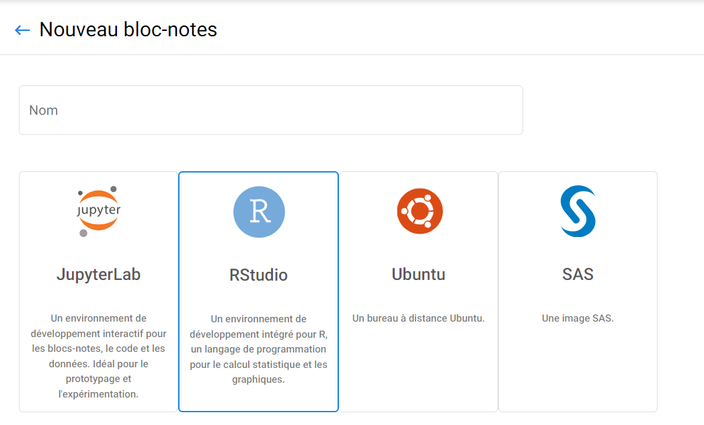

Aperçu¶
RStudio est un environnement de développement intégré (IDE) pour R. Il comprend un console, éditeur et outils de traçage, d'historique, de débogage et d'espace de travail gestion.
Didacticiel vidéo¶
Installation¶
Vous pouvez utiliser l'image rstudio pour obtenir un environnement RStudio ! Lorsque vous créez votre bloc-notes, choisissez RStudio dans la liste des images disponibles.


Vous pouvez installer les packages R ou python avec conda ou install.packages().
Une fois que vous avez les bases...¶
R-Shiny¶
Vous pouvez aussi utiliser « Shiny » ! Shiny est un package R open source qui fournit un cadre web pour créer des applications Web à l'aide de R. Shiny vous aide à transformer votre analyses en applications Web interactives.

R Studio¶
Traiter les données à l'aide de R ou Python dans R Studio
R Studio est un puissant environnement de développement intégré (IDE) qui prend en charge les langages de programmation R et Python, ce qui en fait un choix idéal pour les analystes de données et les scientifiques. Avec R Studio, vous pouvez effectuer un large éventail de tâches de traitement de données, du nettoyage et de la transformation des données à l'analyse statistique et à l'apprentissage automatique. Le logiciel fournit une interface conviviale et une variété d'outils et de bibliothèques qui simplifient les tâches complexes d'analyse de données. De plus, R Studio facilite le partage de votre travail avec d'autres en créant des rapports et des visualisations dynamiques et interactifs qui peuvent être publiés en ligne ou partagés sous forme de documents autonomes. Dans l'ensemble, R Studio est un outil polyvalent et puissant, essentiel pour toute personne travaillant avec des données en R ou Python.
R Studio vous offre un environnement de développement intégré pour R et Python. Utilisez l'image r-studio-cpu pour obtenir un environnement R Studio.